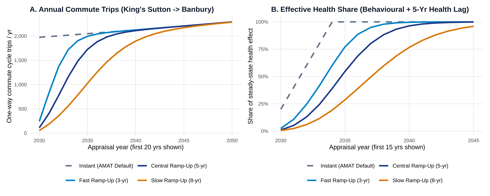

| Corridor Classification | Links | Length (km) | Share (%) |
|---|---|---|---|
| Repurposed HS2 TCR | 87 | 21.72 | 19.3% |
| Upgrade PROW | 25 | 19.51 | 17.3% |
| New Greenway | 25 | 19.31 | 17.2% |
| Local Road Quietway | 34 | 18.64 | 16.6% |
| Existing routes | 18 | 13.43 | 11.9% |
| Quiet Lane | 19 | 8.36 | 7.4% |
| Canal Towpath Upgrade | 8 | 7.17 | 6.4% |
| Main Road-Cycle tracks | 17 | 3.98 | 3.5% |
| HS2 delivered greenway | 1 | 0.34 | 0.3% |
Active Travel Uptake Modelling: First-Principles Method & Oxfordshire–Uxbridge Case Study
Technical Note for Economic Appraisal (TAG, AMAT & ATE Theoretical Framework Alignment)
Purpose and audience. This technical note is written for the project’s consultancy economists and Dr John Nellthorp (ITS, University of Leeds). It audits the active travel demand modelling completed to date across railactive, sets out a transparent, first-principles uptake methodology explicitly aligned with Active Travel England’s Active Mode Benefits: Theoretical Framework (Nellthorp et al. 2026), illustrates the method on the 112.5 km Oxfordshire-to-Uxbridge corridor using 2011 Census OD commuting data, specifies the exact output datasets for DfT AMAT / TAG / TATE3030 economic appraisal, and lists the strategic modelling choices to agree before scaling to the full North–South Greenway.
1 Assessment of Existing RailActive Uptake Work
Before designing the full-corridor economic appraisal pipeline, we audited the analytical work completed across the three railactive repositories (railactive/pipeline, railactive/hs2cycle, railactive/amat) and the interactive /netassign viewer.
1.1 What Has Been Delivered and Verified
- Harmonised corridor alignment (
north_south_corridor_v2.json, v0.5.2): An 805.6 km preferred North–South Greenway spine (385.7 km core HS2 alignment plus southern Avenue Verte and northern Stoke–Birkenhead branches) classified into a 3-tier status taxonomy (preferred,alternative,superseded) and explicit HS2 civil-asset designations (Repurposed HS2 TCR,HS2 delivered greenway,Dual Use MATs). - Multi-purpose network assignment and counter validation (
pipelinePhases 1–4): Using the Rust/CSISnetassignengine, the preferred greenway was topologically spliced into a 1.72-million-link corridor network (Scenario Abaseline vsScenario BHigh-LoS Greenway, with DEM gradients capped at \(\pm 2\%\) on engineered alignments) and validated against 7,219 cycling and 1,439 walking count stations. Adding non-commute utility, school, leisure, and OSM campsite/tourism layers improved baseline cycling fit from \(R^2_{\log 10} = 0.352\) (commute-only) to \(0.676\) (56.2%within \(2\times\)), and walking fit from \(-0.177\) to \(0.488\) (66.8%within \(2\times\)). Across the full 805.6 km spine, Phase 2 separated route diversion (+3,175bike pkm/day,+15.4%) from induced/shifted commute demand (+4,953bike pkm/day), while Phase 4 all-purpose modelling lifted spine cycling from86.7to132.3riders/day (+52.6%). - Verified AMAT appraisal engine (
railactive/amat): A pure base-R implementation of DfT AMAT (May 2026 TAG Data Book / 2023 prices) that reproduces the official Clifton Road worked example to £0.00 across every benefit and cost stream (\(\text{BCR} = 2.840169\)).
1.2 Five Methodological Gaps to Resolve Before Scaling Up
Our audit also identified five structural weaknesses in the prototype demand pipeline that must be tightened before feeding numbers into a formal Green Book / TAG business case:
| # | Current Prototype Implementation | Economic / Appraisal Risk | Required Upgrade |
|---|---|---|---|
| 1 | Ad-hoc commute uplift (Phase 2 routing script): Scenario B2 applies heuristic proximity multipliers (+35% on existing cyclists; up to 7.5% car-to-bike shift) rather than a utility-based choice model. |
Violates joint modelling–valuation alignment (Nellthorp et al. 2026, sec. 3.1.1): demand does not respond to the same Generalised Cost (GC) attributes valued in appraisal. | Anchor uptake in a transparent GC / logistic propensity specification with explicit corridor-exposure attenuation (\(\omega_{ij}\)). |
| 2 | Unseparated leisure uplift (Phase 4 all-purpose script): Scenario B applies hardcoded trail weights (5.0x vs 2.5x) and campsite weights (0.18 vs 0.12) without separating route diversion from new generation. |
Risks over-crediting leisure generation and obscures which trips are Exercise & Pleasure (marginal \(VTT = 0\)) vs Other Non-Work Utility (Nellthorp et al. 2026, sec. 1.4.1). | Explicitly segment outputs into TAG’s four active-mode trip purposes and separate route reassignment from net trip generation. |
| 3 | Static steady-state flows (no behavioural ramp-up lag): pipeline outputs a single equilibrium daily flow; AMAT applies 100% demand in Year 1 plus a 5-year linear physiological health lag. |
Overstates Present Value Benefits (PVB) by 10–25% if real-world uptake builds over 3–8 years (Goodman et al. 2014). | Introduce an explicit behavioural adoption S-curve convolved with AMAT’s physiological health lag over the 40-year ATE appraisal period. |
| 4 | Census 2021 lockdown distortion: Phase 2 relied on March 2021 Census OD matrices collected during COVID-19 restrictions (~31% working from home). | Distorts inter-town commuting patterns along rural corridors. | Benchmark baseline desire lines against 2011 Census OD (pre-COVID, PCT-compatible), then apply an explicit post-COVID hybrid-working scalar. |
| 5 | Unbridged demand-to-AMAT schema: Link flows (flows.parquet) do not export OD trip lengths, prop_on_scheme, origin-mode diversion shares, or unpowered vs e-bike splits. |
Economists cannot directly populate AMAT or ATE’s forthcoming TATE3030 health tool without ad-hoc post-processing. | Define a formal 4-table hand-off schema (Section 5) with built-in double-counting checks (Nellthorp et al. 2026, Table 13). |
2 First-Principles Uptake Framework
2.1 Joint Modelling–Valuation Alignment with Nellthorp et al. (2026)
A central principle of Nellthorp et al. (2026) (§3.1.1, p. 21) is that demand modelling and economic valuation must be specified jointly so that travellers’ behavioural responses are driven by the exact same trip-utility attributes that enter welfare appraisal. Following Equations (6)–(10) of Nellthorp et al. (2026), the trip utility \(U_r\) (and corresponding monetary Generalised Cost \(GC_r = -U_r / \beta\), where \(\beta\) is the marginal utility of income; Wardman and Toner (2020)) of an active travel route \(r\) connecting origin \(i\) to destination \(j\) is:
\[ GC_{ij,r} = \sum_{n \in r} \Bigl( m\,v_t\,t_n + v_s\,s_n + v_e\,e_n + v_c\,c_n \Bigr) + \frac{U_{\text{pre}} + U_{\text{post}}}{\beta} \approx \int_{0}^{T_r} \Bigl[ \beta + q(t) + e(t) \Bigr]\,\mathrm{d}t + \frac{U_{\text{pre}} + U_{\text{post}}}{\beta} \tag{1}\]
where, on each link or junction \(n\):
- \(t_n\) is travel time (with multi-modal access/egress multiplier \(m = 2.0\) where relevant);
- \(s_n\) is perceived safety threat (fear, stress, concentration effort from motor traffic speed, volume, and HGV share — experienced in the present, and shown by Nellthorp et al. (2026, sec. 3.3.1) to dominate cycling deterrence, with 61% of non-cyclists citing safer roads as the key enabler in NTAS Wave 9; Department for Transport (2024));
- \(e_n\) is net physical exertion (in MET-hours, driven by distance, hilliness, and stopping/starting — which Nellthorp et al. (2026, Eq. 14) decompose into short-term effort disutility, short-term positive exercise wellbeing, and a small perceived share \(\theta \approx 0\) of discounted long-term health outcomes);
- \(c_n\) is street ambience and comfort (surface quality, width, greenery, noise); and
- \(q(t)\) bundles practical infrastructure/traffic conditions along the continuous route integral (Nellthorp et al. 2026, sec. 3.1.6; Kouwenhoven et al. 2023).
Building a continuous, traffic-free LTN 1/20 greenway (Department for Transport 2020) along repurposed HS2 haul roads reduces perceived safety disutility \(s_n\) sharply (in TAG Data Book Table A4.1.6, upgrading from “No provision” to an “Off-road segregated cycle track” is valued at 16.28 p/min in 2023 prices; Department for Transport (2025)), smooths gradients (\(e_n\)), and eliminates rural severance. That reduction \(\Delta GC_{ij} < 0\) drives three distinct behavioural margins that economists must keep strictly separate:
- Route choice (diversion): Existing cyclists switch from parallel hostile A/B roads onto the greenway. Net new active trips \(= 0\); benefits accrue purely via Journey Ambience (and external safety changes) to existing users.
- Mode choice (mode shift): Existing commuters switch from car driver, car passenger, bus, rail, or walking onto cycling. Generates Rule-of-a-Half user benefits (\(\Delta CS\)), full physical-activity health benefits (TATE3030 / AMAT), absenteeism savings, and — specifically for the car/taxi-diverted share — TAG Unit A5.4 Marginal External Cost (MEC) savings (decongestion, accidents, GHGs, air quality, noise, infrastructure, indirect tax).
- Trip generation & destination/activity choice (induced demand): Newly generated utility or Exercise & Pleasure trips (crucial on a rural greenway). Generates Rule-of-a-Half user benefits (using \(VTT = 0\) for Exercise & Pleasure; Nellthorp et al. (2026), §1.4.1) and full marginal health benefits, but zero motor-vehicle decongestion MECs.
2.2 From Random Utility to Operational OD Propensity (PCT Logistic Curve)
Under standard Random Utility Maximisation (RUM), the probability \(p_{ij}\) that a commuter on origin–destination pair \((i, j)\) chooses cycling follows a binary (or nested) logistic function of the utility difference \(\Delta V_{ij} = -\lambda\,(GC^{\text{cycle}}_{ij} - GC^{\text{alt}}_{ij})\):
\[ \text{logit}\bigl(p_{ij}\bigr) = \ln\!\left(\frac{p_{ij}}{1 - p_{ij}}\right) = \alpha(q_{ij}) + f(d_{ij},\, g_{ij}) \tag{2}\]
In the UK Propensity to Cycle Tool [PCT; Lovelace et al. (2017)], calibrated on 2011 Census OD flows across England and Wales, the baseline distance–hilliness decay function \(f(d, g)\) for fastest-route distance \(d_{ij}\) (km) and average gradient \(g_{ij}\) (%) is:
\[ \text{logit}\bigl(p^{\text{base}}_{ij}\bigr) = -3.818 - 0.652\,d_{ij} + 2.084\sqrt{d_{ij}} + 0.00878\,d_{ij}^2 - 0.256\,g_{ij} + 0.0199\,d_{ij}g_{ij} - 0.123\sqrt{d_{ij}}\,g_{ij} \tag{3}\]
Because \(d_{ij}\) and \(g_{ij}\) are observed directly for every 2011 LSOA pair, an area-wide transformation to Dutch-standard infrastructure (Go Dutch) acts primarily as a parallel shift in the infrastructure-quality intercept (\(\Delta \alpha_{\text{Dutch}} = +2.552\), with a slight distance slope adjustment \(-0.079\,d_{ij}\)), while E-bikes additionally attenuates the distance and gradient penalties \(e(t)\) — directly reflecting the reduced MET-hour effort disutility of electrically assisted cycles (Nellthorp et al. 2026, sec. 4.2.3).
2.3 Scheme-Exposure Attenuation (\(\omega_{ij}\)): Avoiding Single-Corridor Over-Attribution
A common error in active travel appraisals is crediting 100% of an area-wide Go Dutch network scenario to a single linear corridor. An OD desire line crossing perpendicular to the greenway — or starting 2.5 km away from an access point — receives only a fraction of the \(\Delta GC\) experienced by a trip whose origin, destination, and route lie directly on the spine.
From first principles, we therefore define a transparent, dimensionless corridor exposure weight \(\omega_{ij} \in [0, 1]\) for each OD pair:
\[ \omega_{ij} = \phi_{ij} \cdot \exp\!\left(-\frac{a_i + a_j}{L_a}\right) \tag{4}\]
where \(\phi_{ij} \in [0, 1]\) is the fraction of the straight-line desire line falling within a 1.5 km lateral corridor buffer, \(a_i\) and \(a_j\) are the Euclidean access/egress distances (m) from the origin and destination population-weighted centroids to the greenway spine, and \(L_a = 3{,}000\text{ m}\) is the combined access-decay scale (meaning an OD pair with \(a_i = a_j = 500\text{ m}\) and \(\phi_{ij} = 1\) retains \(\omega_{ij} = e^{-1/3} = 0.72\), whereas a pair 2.5 km from the spine at both ends retains only \(e^{-5/3} = 0.19\)).
For any corridor investment scenario achieving a fraction \(\kappa \in (0, 1]\) of the Dutch-quality infrastructure gap along the scheme itself, predicted steady-state commute cyclists \(C^{1}_{ij}\) are:
\[ C^{1}_{ij} = \min\!\Bigl(N_{ij},\; C^{0}_{ij} + \kappa\,\omega_{ij}\,\max\bigl(0,\; C^{\text{ref}}_{ij} - C^{0}_{ij}\bigr)\Bigr) \tag{5}\]
where \(N_{ij}\) is total commuters, \(C^{0}_{ij}\) is observed baseline cyclists, and \(C^{\text{ref}}_{ij}\) is the PCT Go Dutch (Central, \(\kappa = 0.50\)) or E-bikes (High, \(\kappa = 0.60\)) upper-envelope benchmark. This keeps the model strictly bounded, monotone in access proximity and alignment, and immediately auditable by economists.
3 Case Study: Oxfordshire to Uxbridge (112.5 km)
3.1 Corridor Geography and Infrastructure Profile
To demonstrate the framework on a tractable, diverse, and policy-relevant stretch before full-corridor roll-out, we select the 112.5 km Oxfordshire-to-Uxbridge section of the preferred North–South Greenway (v0.5.2, Sections 13, 10, 8, 7, 6, 5, 4, 3, 2, 1, 12, 11, comprising 234 preferred links). Running south-east from Banbury (Cherwell District, Oxfordshire) via Brackley, Finmere/Mixbury (northern Oxfordshire), Calvert/Quainton, Aylesbury, Wendover, Great Missenden, Amersham, and the Colne Valley into Uxbridge (London Borough of Hillingdon), this section spans rural market towns, HS2 civil engineering haul roads, Chiltern valleys, and outer-London commuter catchments.
Over 64% (72.0 km) of the corridor comprises off-road or segregated active travel assets — led by Repurposed HS2 Temporary Construction Roads (21.7 km, 19.3%), Upgraded PRoW (19.5 km), New Greenway (19.3 km), Canal Towpath Upgrades (7.2 km), and Main Road Cycle Tracks (4.0 km) — linked by quietways (18.6 km), existing routes (13.4 km), and quiet lanes (8.4 km).

3.2 2011 OD Commute Uptake Potential Across the Corridor
Extracting all inter-LSOA 2011 Census commute desire lines (\(\le 20\text{ km}\) fastest-route distance) whose origin and destination centroids lie within 3 km of the Oxfordshire–Uxbridge spine yields 3,657 OD pairs representing 53,440 daily commuters (59.1% car drivers, 25.0% walking, and only 3.92% (2,096) cycling). Restricting to the core corridor-aligned subset (both endpoints \(\le 1.5\text{ km}\) from the spine, \(\ge 70\%\) of the desire line within 1.5 km, distance \(1.5\text{–}20\text{ km}\)) isolates 1,463 OD pairs and 23,217 commuters (4.29% baseline cycling) whose journeys directly align with the proposed greenway.
| Scenario | 3 km Cyclists | 3 km New | 3 km Share | Core Aligned Cyclists | Core New | Core Share |
|---|---|---|---|---|---|---|
| Baseline (2011 Census Observed) | 2,096 | 0 | 3.9% | 996 | 0 | 4.3% |
| PCT Government Target (National Benchmark) | 4,938 | 2,842 | 9.2% | 2,333 | 1,337 | 10.1% |
| Corridor Central (50% Go Dutch, attenuated) | 6,192 | 4,096 | 11.6% | 3,450 | 2,454 | 14.9% |
| Corridor High (60% E-bikes, attenuated) | 8,106 | 6,010 | 15.2% | 4,599 | 3,603 | 19.8% |
| PCT Go Dutch (Unattenuated Area Ceiling) | 18,432 | 16,336 | 34.5% | 8,413 | 7,417 | 36.2% |
| PCT E-bikes (Unattenuated Area Ceiling) | 22,190 | 20,094 | 41.5% | 10,089 | 9,093 | 43.5% |
Three findings stand out immediately for economic appraisal:
- Corridor-exposure attenuation matters enormously: Unattenuated Go Dutch yields
+16,336commute cyclists across the 3 km catchment, but once we attenuate by scheme alignment and access distance (\(\omega_{ij}\)) with \(\kappa = 0.50\), the Corridor Central estimate is+4,096new commute cyclists (11.6%mode share), of whom+2,454(60%) sit in the tightly aligned core subset (14.9%mode share). - Spatial concentration around key nodal hubs: Demand clusters strongly around Aylesbury, Banbury, Uxbridge/Denham, and Amersham/Chalfonts (Figure 2). Rural inter-village links (Sections 4–7 around Calvert, Steeple Claydon, and Finmere) carry much lower commute volume and will rely far more heavily on leisure/tourism and e-bike demand.
- Distance profile and the e-bike unlock: Conventional cycling uptake peaks sharply at
2–6 km, whereas e-bikes disproportionately unlock the6–15 kminter-settlement band (such as Wendover–Aylesbury, King’s Sutton–Banbury, and Chalfont St Peter–Uxbridge) where rural greenway segments sit.

4 Worked Example Desire Line: Commuting, Leisure Extension & Temporal Lag
4.1 Step-by-Step Commute Calculation: King’s Sutton to Banbury
To make the mechanics completely transparent for economists, we trace a single real 2011 Census OD desire line at the Oxfordshire end of the corridor: E01027288 -> E01028435 (King’s Sutton, South Northamptonshire border \(\rightarrow\) Banbury Town Centre, Cherwell / Oxfordshire).
- Observed 2011 attributes: \(N_{ij} = 55\) daily commuters:
0cyclists,1walker,34car drivers (61.8%),8car passengers,7bus, and5rail. Fastest road distance \(d_{ij} = 7.84\text{ km}\), average slope \(g_{ij} = 1.50\%\). - Corridor alignment: Origin centroid is
246 mfrom the preferred greenway spine (Section 10/13); destination centroid in central Banbury is400 mfrom the spine; 100% of the straight-line desire line lies within 1 km of the greenway (\(\phi_{ij} = 1.00\)).
Step 1 — Baseline & upper-envelope logistic propensities (Equation 3): Evaluating the PCT logistic curve at \(d = 7.84\text{ km}\) and \(g = 1.50\%\) gives a UK baseline propensity of \(p^{\text{base}} = 3.82\%\) (2.10 cyclists under Government Target), a Go Dutch propensity of \(p^{\text{Dutch}} = 21.29\%\) (11.71 cyclists), and an E-bikes propensity of \(p^{\text{ebike}} = 31.82\%\) (17.50 cyclists). Observed baseline cycling is 0, reflecting severe traffic-stress deterrence (\(s_0\)) on existing rural roads into Banbury.
Step 2 — Corridor exposure weight (Equation 4) and steady-state commute uptake (Equation 5): \[
\omega_{ij} = 1.00 \times \exp\!\left(-\frac{246 + 400}{3{,}000}\right) = 0.8064
\] Under Corridor Central (\(\kappa = 0.50\) of the Go Dutch gap), steady-state commute cyclists rise from 0 to 4.72 commuters (+4.72 new cyclists; 8.6% mode share). Applying the standard AMAT return-trip factor (\(1 + 0.90 = 1.90\)) and 220 commuting days/year yields 8.97 one-way cycle trips/day (1,973 trips/year, 15,471 cycle-km/year on this single LSOA pair). Under Corridor High (E-bikes, \(\kappa = 0.60\)), uptake rises to 8.47 commute cyclists (16.09 daily one-way trips).
Step 3 — Mode diversion decomposition (for TAG Unit A5.4 MECs): Under proportional diversion from non-cycling modes (PCT default), 34 / 55 = 61.8% of new cyclists (2.92 commuters) divert from car driver, 14.5% from car passenger, 21.8% from public transport, and 1.8% from walking. However, AMAT’s national default car-driver diversion rate is only 24% (plus 6% taxi; Department for Transport (2025)). On a car-dominated rural corridor like King’s Sutton–Banbury (62% car driver), using the national urban default understates displaced vehicle-km by more than half — illustrating why OD-specific diversion shares (Option 3 in Section 6) should be passed into economic appraisal.

To confirm consistency across the full 112.5 km corridor — from Oxfordshire through mid-Buckinghamshire to West London — Table 3 compares four representative corridor-aligned desire lines.
| Desire Line | Dist (km) | Slope (%) | N | Car | Exposure | Base | Central | High | Go Dutch |
|---|---|---|---|---|---|---|---|---|---|
| King’s Sutton -> Banbury | 7.84 | 1.50 | 55 | 62% | 0.81 | 0 | 4.7 | 8.5 | 11.7 |
| Weston Turville -> Aylesbury | 5.67 | 0.79 | 32 | 72% | 0.82 | 0 | 4.9 | 7.0 | 11.9 |
| Wendover -> Aylesbury | 9.16 | 1.17 | 25 | 72% | 0.69 | 0 | 1.6 | 3.0 | 4.7 |
| Denham -> Uxbridge | 4.29 | 0.96 | 13 | 54% | 0.65 | 1 | 2.5 | 3.1 | 5.5 |
4.2 Extending the Model to Leisure and Exercise/Pleasure Trips
Commuting accounts for only 29.9% of cycling trips in the National Travel Survey (2022–2024) and 29.5% of cycling minutes in the Active Lives Survey (Year 9), whereas leisure cycling accounts for 39.7% of trips and 70.5% of total cycling time (with longer mean trip distances of 6.76 km vs 5.52 km for commuting; see Methodology). On rural greenway sections like Banbury–Brackley–Calvert, omitting leisure understates total demand by a factor of 3 to 5.
Crucially, Nellthorp et al. (2026) (§1.4.1, Table 2, p. 4) demonstrate that active mode appraisal requires four trip purposes, splitting out Exercise & Pleasure (where utility resides in the journey itself: leisure rides, dog walking, running) from Other Non-Work Utility (shopping, education, visiting friends, station access):
- For Exercise & Pleasure trips (estimated at ~30% of all main-mode active trips nationally, and substantially higher on traffic-free rural greenways), marginal Value of Travel Time (\(VTT\)) equals zero: shortening a recreational ride leads users to ride further rather than bank time savings (Nellthorp et al. 2026, x, fn 79).
- However, Exercise & Pleasure trips still generate full Journey Ambience / perceived safety user benefits (via Rule of a Half) and full physical-activity health benefits (mortality and morbidity via AMAT / TATE3030), though with lower car-diversion MECs because many are newly generated or displaced from alternative leisure activities rather than car commutes.
In operational modelling, the commute desire-line framework extends to leisure in two transparent tiers:
- Tier 1 — Empirical purpose expansion (rapid screening / sensitivity): Scale commute uptake on each corridor segment using purpose ratios calibrated to NTS/ALS and rural greenway counter evidence (in Phase 4 of
railactive/pipeline, HS2 Alignment links average21.9daily commute cyclists vs16.4local leisure +27.2tourism/day-trip +15.1education/utility =80.6total daily cyclists, a 3.7× all-purpose multiplier on commuting). Applied to the King’s Sutton–Banbury desire line (8.97daily commute trips under Corridor Central), a conservative1.5×local leisure +0.5×other-utility ratio adds+13.5leisure/exercise trips/day and+4.5other-utility trips/day (27.0total daily trips), tagged explicitly withpurpose = exercise_pleasure(\(VTT = 0\), lower car diversion) vspurpose = other_utility. - Tier 2 — Dedicated spatial leisure/tourism gravity model (full-scale corridor): Generate explicit OD flows from residential zones (LSOAs/OAs), rail stations, and OSM campsites/stays to greenway trail points, country parks, and heritage attractors (as prototyped in
pipelinePhase 4), using a longer distance-decay parameter (\(L \approx 6\text{–}9\text{ km}\) vs \(3\text{–}5\text{ km}\) for utility) and an explicit loop-ride / out-and-back factor, calibrated directly against weekend vs weekday counter ratios at rural trail counters.
4.3 Modelling Change Over Time Including Behavioural and Physiological Lags
Nellthorp et al. (2026) (§2.3, fn 28 & 30) note that ATE uses a 40-year appraisal period for active travel infrastructure (compared with 60 years in TAG Unit A1.1), discounting transport benefits at 3.5% and health benefits at 1.5% (1.29% long-term) from a 2023 base year (HM Treasury 2026). While AMAT incorporates a 5-year linear physiological health lag (\(h_k = \min(1, 0.2k)\) for years \(k = 1\dots 5\) after an individual becomes active), neither AMAT nor Nellthorp et al. (2026) currently specifies a behavioural demand ramp-up lag. Longitudinal evaluations of new UK traffic-free routes (e.g. the iConnect study; Goodman et al. (2014)) show that behaviour adjusts gradually over 2–5+ years as awareness spreads, habits shift, and bikes/e-bikes are acquired.
To capture both mechanisms transparently, let \(r(t) \in [0, 1]\) denote the cumulative behavioural adoption share at time \(t\) years post-opening, modelled via a Bass diffusion S-curve (Bass 1969) with innovation parameter \(p\) (early adopters responding immediately on opening) and imitation/network-effect parameter \(q\):
\[ r(t) = \frac{1 - e^{-(p + q)t}}{1 + \frac{q}{p}\,e^{-(p + q)t}} \tag{6}\]
In appraisal year \(y \ge oy\) (with \(t_y = y - oy + 0.5\) at mid-year), new daily trips equal:
\[ \Delta T_y = \Delta T^{*} \cdot r(t_y) \cdot (1 + g_{\text{bg}})^{\min(y - oy,\, 20)} \tag{7}\]
where \(\Delta T^{*}\) is steady-state equilibrium uptake and \(g_{\text{bg}} = 0.0075\) is AMAT’s annual background user growth rate. Because each annual cohort of newly converted riders \(\Delta r_j = r(t_j) - r(t_{j-1})\) enters at year \(j\) and then builds physiological mortality protection over 5 years, the effective health-benefit share \(H^{\text{eff}}_k\) in operational year \(k\) is the exact discrete convolution:
\[ H^{\text{eff}}_k = \sum_{j=1}^{k} \Delta r_j \cdot \min\!\bigl(1,\; 0.2\,(k - j + 1)\bigr) \tag{8}\]

| Adoption Profile | Yr 1 Share | Yr 3 Share | Yr 5 Share | 40-Yr Transport PV Factor (3.5%) | 40-Yr Health PV Factor (1.5%) |
|---|---|---|---|---|---|
| Instant (AMAT Default) | 100% | 100% | 100% | 1.000 (+0.0%) | 1.000 (+0.0%) |
| Fast Ramp-Up (3-yr) | 12% | 68% | 94% | 0.918 (-8.2%) | 0.937 (-6.3%) |
| Central Ramp-Up (5-yr) | 6% | 39% | 73% | 0.867 (-13.3%) | 0.896 (-10.4%) |
| Slow Ramp-Up (8-yr) | 3% | 18% | 39% | 0.777 (-22.3%) | 0.820 (-18.0%) |
Notice the key economic insight in Table 4: under a realistic 5-year Central ramp-up, 40-year transport/ambience PV falls by 13.3%, whereas health PV falls by 10.4% — a smaller percentage drop despite the compounded physiological lag, because Green Book health discounting (1.5%) weights later years much more heavily than transport discounting (3.5%).
5 Output Datasets for the Economic Evaluation Side
To create a clean, auditable contract between the spatial demand team and the consultancy’s economic appraisal models (railactive/amat, TAG worksheets, and ATE’s forthcoming TATE3030 morbidity/mortality tool), the uptake pipeline will output four standardised tables:
| Output Dataset | Granularity | Key Fields & Units | Economic Appraisal Consumer |
|---|---|---|---|
1. OD Uptake (od_uptake.parquet) |
OD pair \(\times\) Purpose (commute, business, other_utility, exercise_pleasure) \(\times\) Mode (walk, cycle, ebike) \(\times\) Scenario |
o_id, d_id, section_id, rf_dist_km, slope_pct, omega_corr, prop_on_scheme, trips_base, trips_with, trips_new, divert_car, divert_pt, divert_walk, induced_share, delta_met_wk |
TAG Unit A5.4 MECs (car-km displaced), TATE3030 health MET-hours, Rule-of-a-Half \(\Delta CS\) |
2. Link Flows (link_flows.parquet) |
Network link \(\times\) Section \(\times\) Scenario | link_id, gw_id, section, class, length_km, infra_base, infra_prop, flow_base, flow_diverted, flow_induced, pkm_base, pkm_with, grade_pct, lts_base, lts_prop |
Link-level Journey Ambience (\(\Delta\text{Rate} \times \text{Time on Scheme}\)), Safety exposure & external casualty costs, scheme prioritisation |
3. Annual Profile (annual_demand.csv) |
Section \(\times\) Year (\(2030\dots 2069\)) \(\times\) Purpose \(\times\) Mode | section, year, ramp_share, health_eff, trips_exist_yr, trips_new_yr, vkm_saved_yr, met_hrs_yr |
40-year discounted PVB stream (3.5% transport / 1.5% health) with explicit ramp-up & background growth |
4. AMAT Inputs (amat_inputs.csv) |
Corridor Section (or Route Case) \(\times\) Scenario | Direct arguments for amat::amat_run(): cycle_trips_without, cycle_trips_with, cycle_trip_km, cycle_prop_on_scheme, cycle_current_infra, cycle_proposed_infra, annual_days, car_divert, prop_employed, plus ramp_pv_t & ramp_pv_h |
Automated batch appraisal via railactive/amat (zero manual spreadsheet entry) |
5.1 Illustrative Economic Scale (Core Aligned Commute Subset Only)
Passing just the core corridor-aligned commuting subset (1,463 OD pairs, +2,454 new commute cyclists = +4,663 daily one-way trips, mean new trip distance 3.43 km, prop_on_scheme = 0.72, 220 commuting days/year, 2030–2069 40-year appraisal period, AMAT default 24% car diversion) through railactive/amat yields an instant-jump PVB of £103.3m (2023 prices, discounted to 2023) — or £91.0m (-12.0%) after applying our Central 5-year behavioural ramp-up:
- Health (Premature Death): £48.5m instant \(\rightarrow\) £43.4m with 5-year ramp-up (47.8% of PVB)
- Journey Ambience: £39.7m instant \(\rightarrow\) £34.4m with 5-year ramp-up (37.8% of PVB)
- Workplace Absenteeism: £8.6m instant \(\rightarrow\) £7.5m with 5-year ramp-up (8.2% of PVB)
- Decongestion & Environmental MECs (Congestion £5.4m, Accidents £0.56m, GHGs £0.32m, Indirect Tax £0.15m, Noise/AQ £0.06m): £6.5m instant \(\rightarrow\) £5.7m with 5-year ramp-up (6.2% of PVB)
Crucially, 86% of total commuting PVB sits in Health and Journey Ambience — before adding morbidity (TATE3030), walking, education/utility, or leisure/tourism demand. That concentration makes adherence to Nellthorp et al. (2026)’s double-counting rules essential:
ImportantDouble-Counting Compliance Checklist
Following Table 13 (Recommendations 1–10) of Nellthorp et al. (2026):
- User benefits vs long-term health (Recs 1–2): Retain \(\theta \approx 0\) as the working assumption — Journey Ambience user benefits and AMAT/TATE3030 long-term health benefits are additive (do not deduct perceived health from TATE3030 unless future DCE evidence establishes \(\theta > 0\), in which case deduct \(\theta \times\) internal health benefits only).
- Rule of a Half boundary (§2.4, fn 58): Apply RoH only to Consumer Surplus / Journey Ambience (\(\Delta CS\)); do not halve physical-activity health benefits or mode-shift MECs.
- User benefits vs safety (Recs 3–6): Because AMAT Journey Ambience (
16.28 p/minfor off-road segregated track) already embeds users’ own perceived safety WTP — which is 2–4× objective own casualty-reduction WTP — never add TAG own-casualty WTP on top. Add only external safety outcome costs (NHS, net output, police, insurance admin, injuries to others) plus mode-shift safety MECs. - Place quality / urban realm (Recs 7–10): Only value destination/origin place quality (\(p_i, p_j\)) for dwell time or short movements strictly outside the trips already captured by the transport model.
- Exercise & Pleasure VTT (§1.4.1): Set marginal \(VTT = 0\) for Exercise & Pleasure trips, while retaining their Journey Ambience and TATE3030 health benefits.
6 Options and Questions Before Scaling to the Full Corridor
Before scaling this workflow from Oxfordshire–Uxbridge (112.5 km) to the entire 805.6 km North–South Greenway, we recommend agreeing the following eight methodological decisions with the consultancy economics team and John Nellthorp:
| # | Decision Area | Options to Consider | Recommended Default & Rationale |
|---|---|---|---|
| 1 | Commute baseline year & WFH adjustment | (a) 2011 Census OD unadjusted; (b) 2021 Census OD; (c) 2011 Census OD spatial pattern scaled to 2026 employment & post-COVID commuting days/wk (e.g., NTS 2023–24 ~3.8 office days/wk vs 4.6 in 2011). |
Option (c): Avoids March 2021 lockdown distortion while transparently reflecting hybrid working via annual_days (e.g., 190–200 days/yr vs 220). |
| 2 | Uptake model engine at scale | (a) Attenuated PCT OD framework (\(\kappa, \omega_{ij}\), fast & auditable); (b) Full GC-elasticity discrete-choice model coupled to netassign shortest-path \(\Delta GC_{ij}\); (c) Hybrid: netassign computes link-level \(\Delta GC_{ij}\) and prop_on_scheme, driving a unified logit uptake equation. |
Option (c) for full business case (achieves full joint alignment with Nellthorp et al. (2026) §3.1.1); Option (a) as transparent sensitivity benchmark. |
| 3 | Car-diversion share (MECs) | (a) National AMAT default (24% car + 6% taxi); (b) OD-specific proportional diversion from 2011/2021 non-cycling mode shares; (c) Nested logit separating {Walk, Cycle} from {Car, PT}. |
Report (a) as TAG Core and (b)/(c) as Sensitivity: On rural corridors (59–62% car share), AMAT’s urban default materially understates displaced car-km. |
| 4 | Leisure & tourism demand methodology | (a) Empirical NTS/ALS purpose multipliers; (b) Dedicated spatial gravity model (residents + stations + OSM campsites \(\rightarrow\) greenway/heritage attractors) calibrated to rural trail counters; (c) ORVal recreation demand integration. | Option (b) with explicit split between Other Non-Work Utility and Exercise & Pleasure (\(VTT = 0\), lower car diversion), cross-checked against (a). |
| 5 | Behavioural ramp-up lag | (a) AMAT default (instant 100% Year 1); (b) Linear 3–5 yr build-up; (c) Bass S-curve (Central 5-yr maturity) convolved with AMAT’s 5-yr physiological health lag, with 3-yr/8-yr sensitivities. | Option (c): Realistic, empirically grounded (Goodman et al. 2014), and guards against BCR optimism bias in Green Book assurance. |
| 6 | E-bike segmentation | (a) Pool all cycling as unpowered; (b) Explicit unpowered vs e-bike split (different distance/slope elasticity, lower MET intensity ~4.5–5.0 vs 6.8 METs, higher average speed ~18–20 km/h). |
Option (b): Explicitly recommended by Nellthorp et al. (2026) (§4.2.3) and decisive for 6–15 km rural inter-town links. |
| 7 | Appraisal period & TATE3030 transition | (a) Standard AMAT 20-year period; (b) ATE 40-year infrastructure period (matching Nellthorp et al. (2026) fn 28); (c) TAG A1.1 60-year period. Also confirm timing for incorporating ATE’s TATE3030 morbidity tool alongside AMAT mortality. | Option (b) (40 years) as core with 20-year AMAT sensitivity; structure outputs (delta_met_wk by demographic segment) to be TATE3030-ready. |
| 8 | Spatial aggregation & boundary double-counting | (a) Whole-corridor unified appraisal; (b) Modular Route Cases / Section appraisals (e.g., Oxfordshire–Uxbridge, Calvert–Quainton, Warwickshire) with cross-boundary trips allocated proportionally by prop_on_scheme. |
Option (b) summing cleanly to (a): Allows phasing/funding prioritisation across local authorities without double-counting cross-section trips. |
7 References
Bass, Frank M. 1969. “A New Product Growth for Model Consumer Durables.” Management Science 15 (5): 215–27. https://doi.org/10.1287/mnsc.15.5.215.
Department for Transport. 2020. Cycle Infrastructure Design: Local Transport Note LTN 1/20. Department for Transport. https://www.gov.uk/government/publications/cycle-infrastructure-design-ltn-120.
Department for Transport. 2024. National Travel Attitudes Study (NTAS) Wave 9: Cycling. Department for Transport, London. https://www.gov.uk/government/statistics/national-travel-attitudes-study-wave-9/national-travel-attitudes-study-ntas-wave-9-cycling.
Department for Transport. 2025. Active Mode Appraisal Toolkit (AMAT). Department for Transport, London (TAG Data Book May 2026 release / 2023 prices). https://www.gov.uk/government/publications/tag-unit-a5-1-active-mode-appraisal.
Goodman, Anna, Shannon Sahlqvist, and David Ogilvie. 2014. “New Walking and Cycling Routes and Increased Physical Activity: One- and 2-Year Findings from the UK iConnect Study.” American Journal of Public Health 104 (9): e38–46. https://doi.org/10.2105/AJPH.2014.302059.
HM Treasury. 2026. The Green Book: Central Government Guidance on Appraisal and Evaluation (and Supplementary Guidance on Discounting). HM Treasury. https://www.gov.uk/government/publications/the-green-book-appraisal-and-evaluation-in-central-government.
Kouwenhoven, Marco, Jeroen Muller, Sebastiaan Thoen, Jasper Willigers, and Gerard de Jong. 2023. Values of Time, Reliability and Comfort in the Netherlands 2022: New Values for Passenger Travel and Freight Transport. Technical Report. Significance.
Lovelace, Robin, Anna Goodman, Rachel Aldred, Nikolai Berkoff, Ali Abbas, and James Woodcock. 2017. “The Propensity to Cycle Tool: An Open Source Online System for Sustainable Transport Planning.” Journal of Transport and Land Use 10 (1): 505–28. https://doi.org/10.5198/jtlu.2016.862.
Nellthorp, John, Thijs Dekker, and Richard Batley. 2026. Active Mode Benefits: Theoretical Framework. Report to Active Travel England. Institute for Transport Studies, University of Leeds. https://www.gov.uk/government/publications/benefits-of-walking-wheeling-and-cycling-theoretical-framework.
Wardman, Mark, and Jeremy Toner. 2020. “Is Generalised Cost Justified in Travel Demand Analysis?” Transportation 47 (1): 75–108. https://doi.org/10.1007/s11116-017-9850-7.